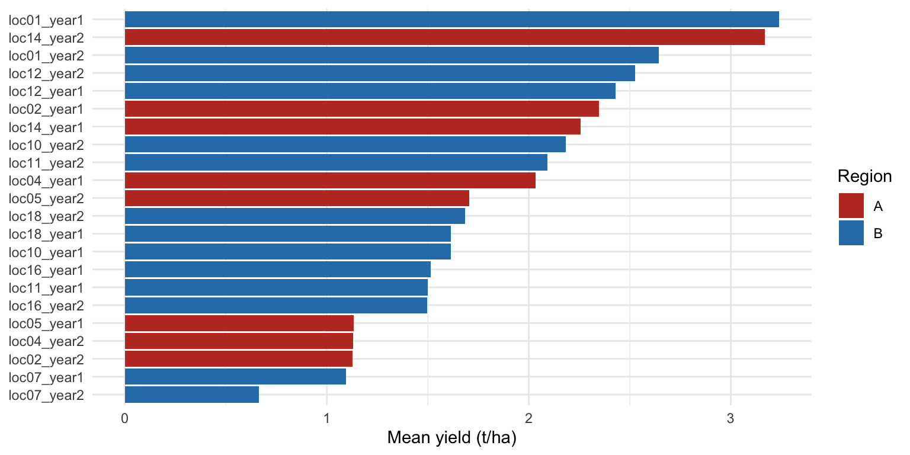
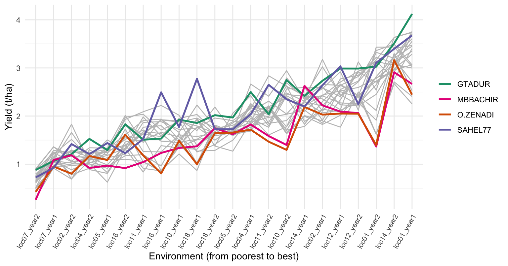
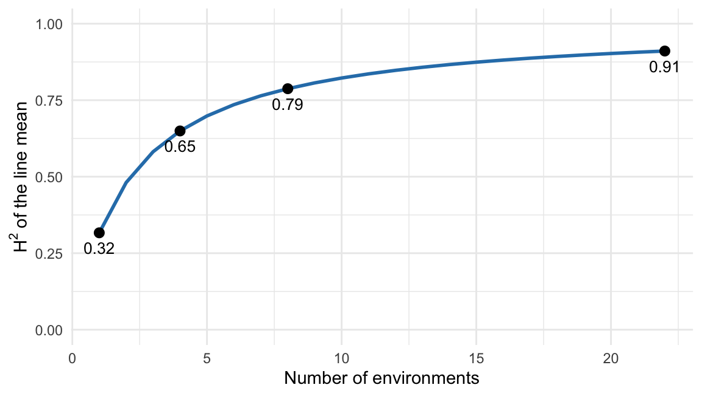
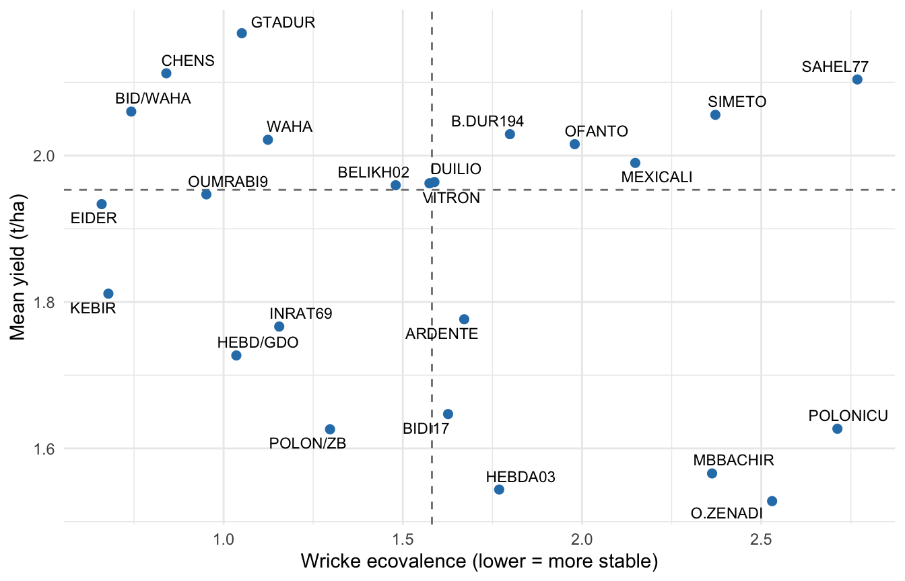
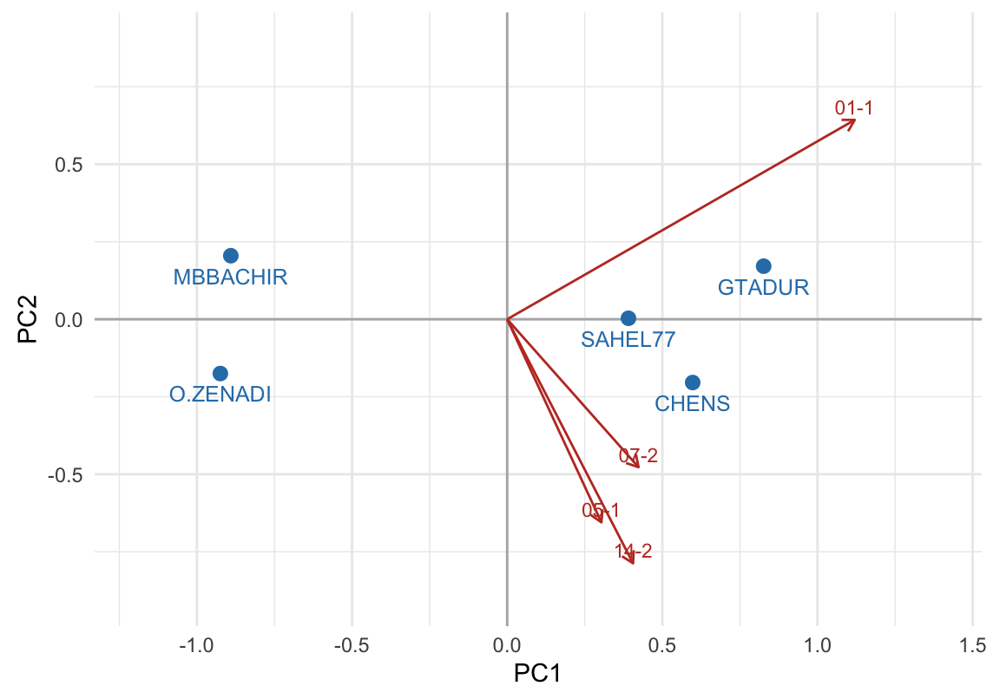
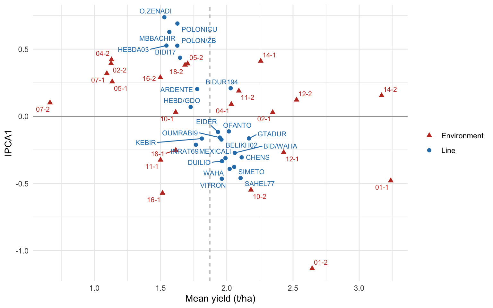
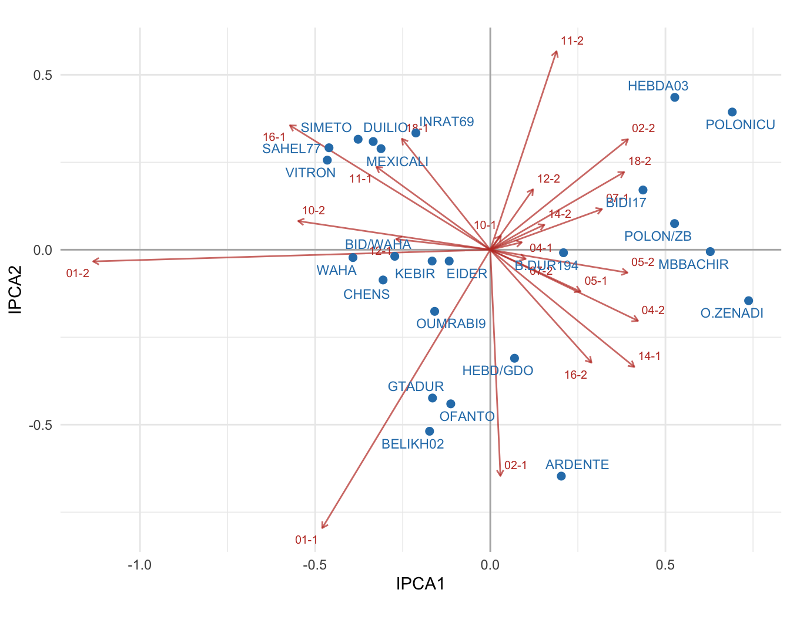
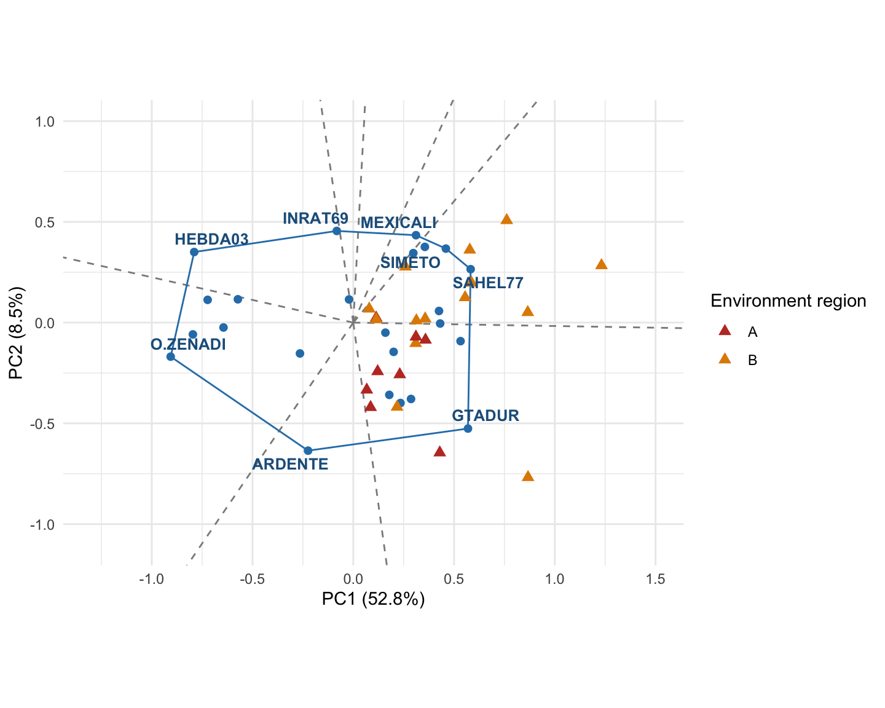
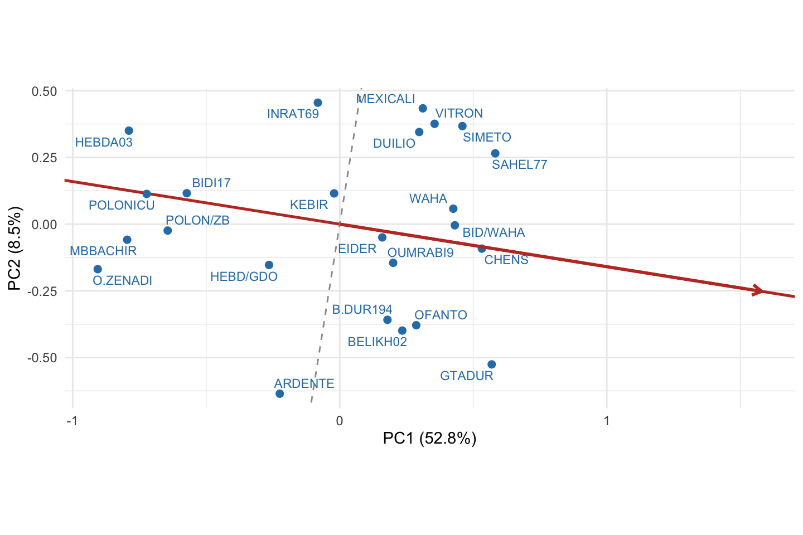

library(dplyr)
library(tidyr)
library(readr)
library(ggplot2)
library(lme4)11 Multi-Environment Trials and G×E Interaction
Author: Luis Fernando Delgado Muñoz
Session: Day 5, Friday 13 November (morning and early afternoon, led by Mirjana Jankulovska)
11.1 Learning objectives
- Explain what the genotype by environment interaction (G×E) is and why one environment is not enough to choose a line
- Split the variation of a multi-environment trial (MET) into genotype, environment and G×E
- Estimate variance components and the heritability of a line mean across environments
- Describe stability and adaptability, and compute simple stability statistics
- Read a principal component analysis (PCA) of a small table, and use the same idea for the AMMI and GGE biplots
- Interpret an AMMI1 biplot, a GGE “which-won-where” biplot and the mean against stability view
- Combine performance and stability in a selection decision
Until now we compared lines inside one trial. A breeder never sells a line to one field in one year. The line will be grown on many farms and in many seasons, and a line that wins in one trial can be average in another. This chapter uses trials run in several environments to answer a different question: which lines are good on average, which are stable, and which are good only somewhere?
NotePackages
The chapter uses only lme4 and ggplot2 and base R, so the AMMI and GGE biplots are built step by step and you can see what they do. At the end (Shortcuts) we show the same analyses with metan and statgenGxE, which are part of the course installation (R/install_packages.R).
11.2 Why test in several environments
Take two lines. In a good year, line A yields more than line B. In a dry year, B is better. If we had tested only in the good year, we would have kept A and lost the line that tolerates drought. That change of ranking, or of the size of the difference, from one environment to another is the genotype by environment interaction (G×E).
There are three situations, and they have different consequences for the breeder:
| Situation | What it looks like | Consequence |
|---|---|---|
| No G×E | Lines keep the same differences everywhere | One good environment is enough to rank lines |
| Scale G×E (no crossing) | Differences get bigger or smaller, but the order is kept | Ranking is safe, the size of the gain changes |
| Crossover G×E | The order of lines changes | The best line depends on where it will be grown |
The crossover case is the one that makes selection hard. We will now see how common it is in real data.
11.3 The data: durum wheat in Algeria
We use a real multi-environment trial of durum wheat (Algeria). It is a complete and balanced data set, which makes it ideal to learn the methods.
met <- read_csv("data/Durum_wheat_Algeria.csv", show_col_types = FALSE) |>
mutate(Genotype = factor(trimws(Genotype)),
Env = factor(Environment),
Loc = factor(Location),
Year = factor(Year),
Block = factor(Block),
region = factor(region),
Group = factor(trimws(GenoGroup)))
met |>
summarise(plots = n(),
genotypes = n_distinct(Genotype),
locations = n_distinct(Loc),
years = n_distinct(Year),
environments = n_distinct(Env),
blocks = n_distinct(Block),
mean_yield = mean(yield))# A tibble: 1 × 7
plots genotypes locations years environments blocks mean_yield
<int> <int> <int> <int> <int> <int> <dbl>
1 2112 24 11 2 22 4 1.87There are 24 genotypes, 11 locations and 2 years, which gives 22 environments (an environment is one location in one year). Each genotype appears once in each of the 4 blocks of each environment, so every line has 4 plots per environment, and the data is balanced. The locations belong to two regions (A and B), and the lines belong to two groups (A and B). Yield is in t/ha.
env_means <- met |>
group_by(Env, region) |>
summarise(yield = mean(yield), .groups = "drop") |>
mutate(Env = reorder(Env, yield))
ggplot(env_means, aes(yield, Env, fill = region)) +
geom_col() +
scale_fill_manual(values = c(A = "#c0392b", B = "#2c7fb8")) +
labs(x = "Mean yield (t/ha)", y = NULL, fill = "Region")
Mean yield goes from 0.66 to 3.24 t/ha across environments. Region does not explain this difference by itself: the two regions have almost the same mean (1.86 and 1.88 t/ha).
11.3.1 Do the lines change rank?
The next figure draws the mean of each line in each environment, with environments ordered from the poorest to the best. Each line is one grey line, and four lines are in colour. If there were no G×E, all the lines would be parallel.
gm <- met |>
group_by(Genotype, Env) |>
summarise(yield = mean(yield), .groups = "drop")
env_order <- gm |> group_by(Env) |> summarise(m = mean(yield)) |> arrange(m) |> pull(Env)
gm <- mutate(gm, Env = factor(Env, levels = env_order),
hl = ifelse(Genotype %in% c("GTADUR", "O.ZENADI", "SAHEL77", "MBBACHIR"),
as.character(Genotype), "other"))
ggplot(gm, aes(Env, yield, group = Genotype)) +
geom_line(data = filter(gm, hl == "other"), colour = "grey75") +
geom_line(data = filter(gm, hl != "other"), aes(colour = hl), linewidth = 1) +
scale_colour_manual(values = c(GTADUR = "#1b9e77", O.ZENADI = "#d95f02",
SAHEL77 = "#7570b3", MBBACHIR = "#e7298a")) +
labs(x = "Environment (from poorest to best)", y = "Yield (t/ha)", colour = NULL) +
theme(axis.text.x = element_text(angle = 60, hjust = 1, size = 8))
The lines are not parallel and they cross many times. The best line in the poorest environments is not always the best in the richest ones. This is G×E in real data.
11.4 How much is G×E? The analysis of variance of a MET
The first look at a MET is an analysis of variance that separates three sources: environments (E), genotypes (G) and their interaction (G×E). Blocks are nested in environments, because “block 1” of one location has nothing to do with “block 1” of another.
fit_met <- lm(yield ~ Env + Env:Block + Genotype + Genotype:Env, data = met)
an <- anova(fit_met)
anAnalysis of Variance Table
Response: yield
Df Sum Sq Mean Sq F value Pr(>F)
Env 21 935.95 44.569 537.1651 < 2.2e-16 ***
Genotype 23 80.84 3.515 42.3627 < 2.2e-16 ***
Env:Block 66 117.69 1.783 21.4909 < 2.2e-16 ***
Env:Genotype 483 151.66 0.314 3.7845 < 2.2e-16 ***
Residuals 1518 125.95 0.083
---
Signif. codes: 0 '***' 0.001 '**' 0.01 '*' 0.05 '.' 0.1 ' ' 1data.frame(source = c("Environment", "Block within environment", "Genotype", "G×E", "Residual"),
share_of_SS = round(pct[c("Env", "Env:Block", "Genotype", "Env:Genotype", "Residuals")], 1)) source share_of_SS
Env Environment 66.3
Env:Block Block within environment 8.3
Genotype Genotype 5.7
Env:Genotype G×E 10.7
Residuals Residual 8.9Environments explain 66 % of the total variation, genotypes only 6 %, and G×E 11 %. Two things follow:
- The environment effect is huge but irrelevant for selection: the breeder cannot choose the year. What matters is the share of G and G×E, and here G×E is about twice the genotype effect.
- The genotype effect cannot be tested against the residual. The environments of the trial are a sample of the environments where the line will be grown, so the right denominator is the G×E mean square.
ms <- an[["Mean Sq"]]; names(ms) <- rownames(an)
F_g <- ms["Genotype"] / ms["Env:Genotype"]
df_g <- an["Genotype", "Df"]; df_ge <- an["Env:Genotype", "Df"]
c(F = unname(F_g), p = unname(pf(F_g, df_g, df_ge, lower.tail = FALSE))) F p
1.119373e+01 2.886352e-32 Against G×E, the genotype effect is still significant (F = 11.2), but the evidence is much weaker than the F value of 42 that we would get against the residual. This is a common mistake in published METs.
11.4.1 Where does G×E come from?
G×E can be split by the structure of the environments (a location and a year). In this data there are the same 11 locations in both years, so we can separate the part of G×E that repeats from year to year at a location from the part that does not.
fit_parts <- lm(yield ~ Env + Env:Block + Genotype + Genotype:Loc + Genotype:Year +
Genotype:Env, data = met)
ap <- anova(fit_parts)
ssp <- ap[["Sum Sq"]]; names(ssp) <- rownames(ap)
ge_total <- sum(ssp[c("Genotype:Loc", "Genotype:Year", "Env:Genotype")])
data.frame(part_of_GxE = c("Genotype × Location (repeatable)", "Genotype × Year", "Genotype × Location × Year (not repeatable)"),
percent = round(100 * ssp[c("Genotype:Loc", "Genotype:Year", "Env:Genotype")] / ge_total, 0)) part_of_GxE percent
Genotype:Loc Genotype × Location (repeatable) 50
Genotype:Year Genotype × Year 6
Env:Genotype Genotype × Location × Year (not repeatable) 44About half of G×E is a genotype by location effect. This part is a property of the location, and it will appear again next year, so it is useful: we can choose lines for locations, or for groups of similar locations. The other half is genotype by location by year, which changes every season and cannot be predicted. The same logic is behind the idea of mega-environments at the end of the chapter.
11.5 Variance components and heritability across environments
With the environments as a sample, genotypes, environments, G×E and blocks are all random, and we estimate their variances.
fit_vc <- lmer(yield ~ 1 + (1 | Genotype) + (1 | Env) + (1 | Genotype:Env) + (1 | Env:Block),
data = met, REML = TRUE)
vc <- as.data.frame(VarCorr(fit_vc))
vc <- setNames(vc$vcov, vc$grp)
round(vc, 4)Genotype:Env Env:Block Genotype Env Residual
0.0578 0.0708 0.0364 0.4433 0.0830 The variance of G×E (0.058) is 1.6 times the genotype variance (0.036). The heritability of a line mean (the quantity that tells how well the mean of a line predicts its true value) depends on how many environments and replicates were used:
\[ H^2 = \frac{\sigma^2_G}{\sigma^2_G + \dfrac{\sigma^2_{GE}}{e} + \dfrac{\sigma^2_\varepsilon}{e\,r}} \]
where \(e\) is the number of environments and \(r\) the number of replicates per environment.
h2_tab <- data.frame(environments = 1:22) |> mutate(H2 = H2(environments))
ggplot(h2_tab, aes(environments, H2)) +
geom_line(colour = "#2c7fb8", linewidth = 1) +
geom_point(data = filter(h2_tab, environments %in% c(1, 4, 8, 22)), size = 2.5) +
geom_text(data = filter(h2_tab, environments %in% c(1, 4, 8, 22)),
aes(label = round(H2, 2)), vjust = 1.8, size = 3.5) +
scale_y_continuous(limits = c(0, 1)) +
labs(x = "Number of environments", y = expression(H^2~"of the line mean"))
In a single environment the heritability is only 0.32. With 4 environments it reaches 0.65, and with the 22 environments of the trial it is 0.91. This is the quantitative argument for a MET: most of what looks like a difference between lines in one trial is G×E and error, and only repeated testing separates the genotype effect from them.
TipReplicates or environments?
Look at the formula. Adding replicates only reduces the error term (\(\sigma^2_\varepsilon / e r\)). Adding environments reduces both the G×E and the error term. When G×E is as large as here, it is almost always better to test in more environments with fewer replicates, than the opposite.
11.6 Stability and adaptability
Two words are often mixed:
- Adaptability: how well a line performs in a given set of environments (its mean, or its response to the quality of the environment).
- Stability: how little the line’s performance changes from one environment to another.
A line can be stable and poor (always low yield), or high yielding in good environments only. The breeder looks for lines that are high and stable, or for lines adapted to a specific group of environments.
11.6.1 Simple stability statistics
We compute three classic statistics from the table of line means by environment.
- Ecovalence (Wricke): the contribution of the line to the G×E sum of squares. Low is stable.
- Regression slope (Finlay and Wilkinson): the slope of the line yield on the environment mean. A slope of 1 means average response; above 1 the line responds more to good environments; below 1 it is less affected.
- Coefficient of variation of the line across environments.
M <- with(met, tapply(yield, list(Genotype, Env), mean)) # genotype x environment table of means
g <- nrow(M); e <- ncol(M)
dc <- M - rowMeans(M) - matrix(colMeans(M), g, e, byrow = TRUE) + mean(M) # G×E effects (double centred)
env_index <- colMeans(M) - mean(M)
stab <- data.frame(
mean = rowMeans(M),
W = rowSums(dc^2), # Wricke ecovalence
slope = apply(M, 1, function(y) unname(coef(lm(y ~ env_index))[2])), # Finlay-Wilkinson
cv = apply(M, 1, function(y) 100 * sd(y) / mean(y))
) |> arrange(desc(mean))
stab$rank_mean <- seq_len(g)
round(stab, 2) mean W slope cv rank_mean
GTADUR 2.17 1.05 1.20 38.59 1
CHENS 2.11 0.84 1.13 37.37 2
SAHEL77 2.10 2.77 1.07 38.55 3
BID/WAHA 2.06 0.74 1.11 37.58 4
SIMETO 2.06 2.37 1.10 39.78 5
B.DUR194 2.03 1.80 1.11 39.86 6
WAHA 2.02 1.12 1.08 37.98 7
OFANTO 2.02 1.98 0.94 35.24 8
MEXICALI 1.99 2.15 1.04 38.94 9
DUILIO 1.96 1.59 1.01 37.73 10
VITRON 1.96 1.57 1.08 39.88 11
BELIKH02 1.96 1.48 1.06 39.15 12
OUMRABI9 1.95 0.95 0.98 35.88 13
EIDER 1.93 0.66 0.99 36.06 14
KEBIR 1.81 0.68 1.02 39.55 15
ARDENTE 1.78 1.67 1.11 45.21 16
INRAT69 1.77 1.16 0.99 40.44 17
HEBD/GDO 1.73 1.04 1.07 43.96 18
BIDI17 1.65 1.63 0.90 40.47 19
POLONICU 1.63 2.71 0.70 34.61 20
POLON/ZB 1.63 1.30 0.93 41.65 21
MBBACHIR 1.57 2.36 0.84 41.84 22
HEBDA03 1.54 1.77 0.78 37.90 23
O.ZENADI 1.53 2.53 0.79 40.91 24The statistics tell different stories. The line mean and the slope are strongly related (rank correlation 0.79): the lines that yield more are also the ones that respond more to good environments. The ecovalence is almost independent of the mean (-0.18), so a line can be high yielding and stable, or high and unstable. This is why no single number describes stability, and why graphical methods help.
stab$Genotype <- rownames(stab)
ggplot(stab, aes(W, mean, label = Genotype)) +
geom_hline(yintercept = median(stab$mean), linetype = 2, colour = "grey50") +
geom_vline(xintercept = median(stab$W), linetype = 2, colour = "grey50") +
geom_point(colour = "#2c7fb8", size = 2) +
ggrepel::geom_text_repel(size = 3, max.overlaps = 30) +
labs(x = "Wricke ecovalence (lower = more stable)", y = "Mean yield (t/ha)")
11.7 PCA on a small example
AMMI and GGE are built on the principal component analysis (PCA) of a table of line means. We first see the idea in a table small enough to read: five lines in four environments.
small <- M[c("GTADUR", "SAHEL77", "O.ZENADI", "MBBACHIR", "CHENS"),
c("loc01_year1", "loc14_year2", "loc05_year1", "loc07_year2")]
round(small, 2) loc01_year1 loc14_year2 loc05_year1 loc07_year2
GTADUR 4.12 3.51 1.29 0.88
SAHEL77 3.68 3.40 1.44 0.72
O.ZENADI 2.44 3.16 1.09 0.43
MBBACHIR 2.67 2.91 0.97 0.26
CHENS 3.75 3.63 1.50 0.90PCA looks for the directions in which the lines differ most. First we centre the columns (subtract the environment mean), because we want differences among lines inside an environment.
pc <- prcomp(small, center = TRUE, scale. = FALSE)
if (mean(pc$rotation[, 1]) < 0) { pc$rotation[, 1] <- -pc$rotation[, 1]; pc$x[, 1] <- -pc$x[, 1] } # the sign is arbitrary: make PC1 point to higher yield
round(pc$sdev^2 / sum(pc$sdev^2) * 100, 1) # % of variation of each component[1] 94.4 4.8 0.8 0.0round(pc$x[, 1:2], 2) # scores of the lines PC1 PC2
GTADUR 0.83 0.17
SAHEL77 0.39 0.00
O.ZENADI -0.92 -0.18
MBBACHIR -0.89 0.20
CHENS 0.60 -0.20round(pc$rotation[, 1:2], 2) # loadings of the environments PC1 PC2
loc01_year1 0.86 0.49
loc14_year2 0.31 -0.61
loc05_year1 0.23 -0.50
loc07_year2 0.33 -0.37sc <- as.data.frame(pc$x[, 1:2]); sc$name <- rownames(sc)
ld <- as.data.frame(pc$rotation[, 1:2] * 1.3); ld$name <- short(rownames(ld))
ggplot() +
geom_hline(yintercept = 0, colour = "grey70") + geom_vline(xintercept = 0, colour = "grey70") +
geom_segment(data = ld, aes(0, 0, xend = PC1, yend = PC2), colour = "#c0392b",
arrow = arrow(length = unit(0.2, "cm"))) +
geom_text(data = ld, aes(PC1, PC2, label = name), colour = "#c0392b", size = 3, vjust = -0.4) +
geom_point(data = sc, aes(PC1, PC2), size = 2.5, colour = "#2c7fb8") +
geom_text(data = sc, aes(PC1, PC2, label = name), size = 3.3, vjust = 1.8, colour = "#2c7fb8") +
coord_equal(xlim = c(-1.2, 1.4), ylim = c(-0.9, 0.9)) + labs(x = "PC1", y = "PC2")
In the plot, environments are named location-year (for example 01-1 is loc01_year1). How to read it:
- A score says where a line is. Lines far apart differ a lot; lines close together behave similarly.
- A loading says how an environment relates to the axes. Two environments with arrows in the same direction rank the lines in the same way; arrows at 90° are unrelated; opposite arrows rank the lines in the opposite way (crossover).
- The first component takes the largest part of the variation; the second takes the largest part of what remains, and is perpendicular to the first.
With a few components we summarize a large table. Two special tables give the two famous biplots:
| Table analysed | What is removed first | Biplot |
|---|---|---|
| Interaction effects only | Genotype and environment means | AMMI |
| Genotype + interaction | Environment means only | GGE |
11.8 The AMMI model
AMMI (additive main effects and multiplicative interaction) fits the additive part (G and E) with an analysis of variance, and then fits the interaction with a PCA. We already have the double-centred table dc (the G×E effects of every line in every environment), so we apply the PCA to it. The PCA of a matrix is its singular value decomposition, svd().
sv <- svd(dc)
ipca <- data.frame(IPCA = 1:8,
percent_of_GxE = round(100 * sv$d[1:8]^2 / sum(sv$d^2), 1))
ipca$cumulative <- cumsum(ipca$percent_of_GxE)
ipca IPCA percent_of_GxE cumulative
1 1 32.9 32.9
2 2 12.1 45.0
3 3 10.8 55.8
4 4 8.3 64.1
5 5 7.5 71.6
6 6 6.7 78.3
7 7 4.6 82.9
8 8 3.9 86.8The first interaction axis (IPCA1) captures 33 % of the G×E and the first two 45 %. G×E here is spread over many axes (the table has no “dominant” pattern), so the biplots below show only part of the story. The usual F test of each axis (Gollob) calls all the first axes significant, because it is very liberal with a large number of environments; we use the percentage and common sense instead.
11.8.1 AMMI1 biplot: mean against IPCA1
The AMMI1 biplot puts the mean on the horizontal axis and the first interaction axis on the vertical axis, for lines and for environments.
G1 <- sv$u[, 1] * sqrt(sv$d[1]); E1 <- sv$v[, 1] * sqrt(sv$d[1])
names(G1) <- rownames(M)
ammi1 <- bind_rows(
data.frame(name = rownames(M), type = "Line", mean = rowMeans(M), ipca1 = G1),
data.frame(name = short(colnames(M)), type = "Environment", mean = colMeans(M), ipca1 = E1))ggplot(ammi1, aes(mean, ipca1, shape = type, colour = type, label = name)) +
geom_hline(yintercept = 0, colour = "grey60") +
geom_vline(xintercept = mean(M), linetype = 2, colour = "grey60") +
geom_point(size = 2) +
ggrepel::geom_text_repel(size = 2.8, max.overlaps = 40, show.legend = FALSE) +
scale_colour_manual(values = c(Line = "#2c7fb8", Environment = "#c0392b")) +
scale_shape_manual(values = c(Line = 16, Environment = 17)) +
labs(x = "Mean yield (t/ha)", y = "IPCA1", colour = NULL, shape = NULL)
How to read it:
- Horizontal position = main effect. Lines to the right of the dashed line yield more than the average.
- Vertical position = interaction. Lines close to zero on IPCA1 are stable in the sense of the IPCA1 axis. Lines far from zero interact strongly.
- Same side = positive interaction. A line above the horizontal line does better than expected in the environments above it, and worse than expected in those below.
On this data the lines with the highest IPCA1 are O.ZENADI, POLONICU, MBBACHIR and those with the lowest are VITRON, SAHEL77, WAHA. Lines with an above average yield and an IPCA1 close to zero (here GTADUR, B.DUR194, OFANTO, BELIKH02) are the safest candidates in this view.
11.8.2 AMMI2 biplot: the two interaction axes
G2 <- sv$u[, 1:2] %*% diag(sqrt(sv$d[1:2])); rownames(G2) <- rownames(M)
E2 <- sv$v[, 1:2] %*% diag(sqrt(sv$d[1:2])); rownames(E2) <- short(colnames(M))
gg2 <- data.frame(G2, name = rownames(G2)); ee2 <- data.frame(E2, name = rownames(E2))
ggplot() +
geom_hline(yintercept = 0, colour = "grey70") + geom_vline(xintercept = 0, colour = "grey70") +
geom_segment(data = ee2, aes(0, 0, xend = X1, yend = X2), colour = "#c0392b", alpha = 0.7,
arrow = arrow(length = unit(0.15, "cm"))) +
ggrepel::geom_text_repel(data = ee2, aes(X1, X2, label = name), colour = "#c0392b", size = 2.6,
max.overlaps = 40) +
geom_point(data = gg2, aes(X1, X2), colour = "#2c7fb8", size = 2) +
ggrepel::geom_text_repel(data = gg2, aes(X1, X2, label = name), colour = "#2c7fb8", size = 3,
max.overlaps = 40) +
coord_equal() + labs(x = "IPCA1", y = "IPCA2")
A line is good in an environment when it lies in the direction of the environment arrow, far from the origin. Lines near the origin have small interaction: they behave as the additive model predicts everywhere.
11.9 The GGE biplot
The GGE biplot (genotype main effect plus G×E) removes only the environment means, because the environment effect is not a property of the line. What is left is the part that matters for choosing a line: its genotype effect and its interaction. The PCA of this table gives PC1, which is mostly the genotype effect, and PC2, which is mostly G×E.
gc <- sweep(M, 2, colMeans(M)) # centre by environment
sg <- svd(gc)
Gs <- sg$u[, 1:2] %*% diag(sqrt(sg$d[1:2])); rownames(Gs) <- rownames(M)
Es <- sg$v[, 1:2] %*% diag(sqrt(sg$d[1:2])); rownames(Es) <- colnames(M)
if (mean(Es[, 1]) < 0) { Gs[, 1] <- -Gs[, 1]; Es[, 1] <- -Es[, 1] } # PC1 positive for the average environment
gge_pct <- round(100 * sg$d[1:2]^2 / sum(sg$d^2), 1)
gge_pct[1] 52.8 8.5PC1 explains 52.8 % and PC2 8.5 % of G + G×E, together 61.3 %, a good representation.
11.9.1 Which-won-where
The lines at the corners of the polygon that contains all the lines are the best (or the worst) in some environments. The lines drawn perpendicular to the sides of the polygon divide the plot in sectors: the corner line of a sector is the winner for all the environments that fall in it.
gg <- data.frame(Gs, name = rownames(Gs)); ee <- data.frame(Es, name = rownames(Es))
ee$region <- env_region[ee$name, "region"]
hull <- chull(Gs)
gg$vertex <- seq_len(nrow(gg)) %in% hull
poly <- gg[c(hull, hull[1]), ]
# perpendicular sector lines through the origin
sect <- do.call(rbind, lapply(seq_along(hull), function(i) {
p <- Gs[hull[i], ]; q <- Gs[hull[ifelse(i == length(hull), 1, i + 1)], ]
n <- c(q[2] - p[2], -(q[1] - p[1])); if (sum(n * p) < 0) n <- -n
n <- n / sqrt(sum(n^2)) * 3
data.frame(x = 0, y = 0, xend = n[1], yend = n[2])
}))
ggplot() +
geom_segment(data = sect, aes(x, y, xend = xend, yend = yend), colour = "grey55", linetype = 2) +
geom_path(data = poly, aes(X1, X2), colour = "#2c7fb8") +
geom_point(data = gg, aes(X1, X2), colour = "#2c7fb8", size = 1.8) +
geom_point(data = ee, aes(X1, X2, colour = region), shape = 17, size = 2.4) +
ggrepel::geom_text_repel(data = filter(gg, vertex), aes(X1, X2, label = name), colour = "#1f5f8b",
fontface = "bold", size = 3.4, max.overlaps = 40) +
scale_colour_manual(values = c(A = "#c0392b", B = "#e08a00")) +
coord_equal(xlim = c(-1.3, 1.5), ylim = c(-1.1, 1)) +
labs(x = paste0("PC1 (", gge_pct[1], "%)"), y = paste0("PC2 (", gge_pct[2], "%)"),
colour = "Environment region")
Only the lines at the corners of the polygon are labelled; the other lines are the blue points inside. Environments are the triangles, coloured by region. Counting the environments of each sector gives:
sector_tab region
sector A B
GTADUR 7 3
SAHEL77 1 11All 22 environments fall in 2 sectors, those of GTADUR and SAHEL77. The sectors are related to the regions (most environments of one sector belong to region B, and the other sector has more environments of region A), but they do not coincide with them. The environments of a sector share the same best line, so these are two candidate mega-environments. The next step is to ask whether it pays to treat them separately:
data.frame(sector_winner = sec_names,
environments = sec_mean["n", ],
yield_of_sector_winner = round(sec_mean["winner", ], 2),
yield_of_overall_best = round(sec_mean["best_overall", ], 2)) |>
mutate(gain_t_ha = round(yield_of_sector_winner - yield_of_overall_best, 2),
gain_percent = round(100 * gain_t_ha / yield_of_overall_best, 1)) sector_winner environments yield_of_sector_winner yield_of_overall_best
GTADUR GTADUR 10 2.28 2.28
SAHEL77 SAHEL77 12 2.17 2.07
gain_t_ha gain_percent
GTADUR 0.0 0.0
SAHEL77 0.1 4.8The overall best line (GTADUR) is also the winner of one sector (gain of zero in that row). In the other sector the sector winner gives a modest gain over it. Splitting the target area in two would help in one half and give nothing in the other, so a wide-adaptation line is a reasonable choice, and the second candidate is kept as an alternative for the environments of its sector.
11.9.2 Mean performance and stability
The second view of the same biplot answers “which line is best on average and how stable is it?”. The average environment axis (AEA) is the arrow from the origin to the mean of all the environment points. The projection of a line on this axis gives its performance; the distance to the axis gives its instability.
aea <- colMeans(Es[, 1:2]); aea_u <- aea / sqrt(sum(aea^2))
perf <- as.numeric(Gs[, 1:2] %*% aea_u)
inst <- abs(Gs[, 1] * aea_u[2] - Gs[, 2] * aea_u[1])
ggplot(gg, aes(X1, X2, label = name)) +
geom_abline(slope = aea_u[2] / aea_u[1], intercept = 0, colour = "#c0392b", linewidth = 0.9) +
geom_abline(slope = -aea_u[1] / aea_u[2], intercept = 0, colour = "grey60", linetype = 2) +
geom_point(colour = "#2c7fb8", size = 2) +
ggrepel::geom_text_repel(size = 3, colour = "#2c7fb8", max.overlaps = 40) +
annotate("segment", x = 0, y = 0, xend = 1.6 * aea_u[1], yend = 1.6 * aea_u[2], colour = "#c0392b",
linewidth = 1, arrow = arrow(length = unit(0.25, "cm"))) +
coord_equal() + labs(x = paste0("PC1 (", gge_pct[1], "%)"), y = paste0("PC2 (", gge_pct[2], "%)"))
gge_tab <- data.frame(line = rownames(M), performance = perf, instability = inst) |>
arrange(desc(performance))
head(gge_tab, 8) |> mutate(across(where(is.numeric), \(x) round(x, 2))) line performance instability
GTADUR GTADUR 0.64 0.43
CHENS CHENS 0.54 0.01
SAHEL77 SAHEL77 0.53 0.35
BID/WAHA BID/WAHA 0.43 0.06
WAHA WAHA 0.41 0.12
SIMETO SIMETO 0.40 0.44
OFANTO OFANTO 0.34 0.33
BELIKH02 BELIKH02 0.29 0.3611.10 Putting performance and stability together
A decision needs both. We gather the statistics for the best lines in one table.
decision <- stab |>
mutate(line = rownames(stab)) |>
left_join(gge_tab, by = "line") |>
mutate(rank_gge = rank(-performance), rank_W = rank(W)) |>
select(line, mean, rank_mean, slope, W, rank_W, instability) |>
head(10)
decision |> mutate(across(where(is.numeric), \(x) round(x, 2))) line mean rank_mean slope W rank_W instability
1 GTADUR 2.17 1 1.20 1.05 7 0.43
2 CHENS 2.11 2 1.13 0.84 4 0.01
3 SAHEL77 2.10 3 1.07 2.77 24 0.35
4 BID/WAHA 2.06 4 1.11 0.74 3 0.06
5 SIMETO 2.06 5 1.10 2.37 21 0.44
6 B.DUR194 2.03 6 1.11 1.80 17 0.33
7 WAHA 2.02 7 1.08 1.12 8 0.12
8 OFANTO 2.02 8 0.94 1.98 18 0.33
9 MEXICALI 1.99 9 1.04 2.15 19 0.48
10 DUILIO 1.96 10 1.01 1.59 13 0.39Among the 10 highest yielding lines, GTADUR, CHENS, BID/WAHA, WAHA have an ecovalence below the median, so they are high and stable. SAHEL77, SIMETO, B.DUR194, OFANTO, MEXICALI, DUILIO have a high mean but a high ecovalence: they are good in some environments and disappoint in others. The reading is:
- High mean and stable: candidates for wide release. They make the shortlist.
- High mean and unstable: candidates for a specific group of environments, only if the environments where they win can be identified and are common.
- Low mean: out, however stable. Stability is not a virtue by itself.
ImportantStability does not replace the mean
Stability statistics are secondary criteria. First rank the lines by their mean across environments (a BLUP of the genotype when the data is unbalanced), and then use stability to separate lines that are close. A line that is “very stable” at a low yield is not a good variety.
11.11 Mega-environments and targeting
If the environments fall in groups where the same line wins inside a group but different lines win between groups, the target area can be divided into mega-environments, and one variety is selected for each. If the groups do not exist, the aim is a wide-adaptation line.
In our data the regions are a natural candidate. How much G×E do they explain?
fit_reg <- lm(yield ~ Env + Env:Block + Genotype + Genotype:region + Genotype:Env, data = met)
ar <- anova(fit_reg)
ge_all <- an["Env:Genotype", "Sum Sq"]
share_reg <- ar["Genotype:region", "Sum Sq"] / ge_all
cor_regions <- with(met, cor(tapply(yield[region == "A"], Genotype[region == "A"], mean),
tapply(yield[region == "B"], Genotype[region == "B"], mean)))
c(share_of_GxE_explained_by_region = round(share_reg, 2), correlation_of_line_means_between_regions = round(cor_regions, 2)) share_of_GxE_explained_by_region
0.11
correlation_of_line_means_between_regions
0.68 The region separates only 11 % of the total G×E, and the line means in the two regions are correlated (0.68). Region is a weak mega-environment here: it changes the ranking of some lines (G×region is significant), but most of the G×E is inside the regions, between locations and years.
This is a useful negative result. Dividing the target area in two would not remove most of the G×E, so the breeding strategy should be to test in more locations and to use the stability criteria above.
11.12 Multi-environment trials in a mutation breeding programme
In a mutation breeding programme, the early generations (M2, M3) are grown in one environment with little seed, and the aim is only to select. The MET starts later, with the advanced mutant lines that have shown interest, in preliminary and advanced yield trials in several locations and seasons. At that stage, the methods of this chapter apply directly:
- The parent and the checks are included in every environment, so that every environment is connected to the others and the mutants can be compared with the parent everywhere.
- The number of environments matters more than the number of replicates, as in Figure 11.3.
- A mutant with a clear advantage over the parent in most environments (and not only in the best ones) is the one to propose for release or to enter in the Mutant Variety Database.
11.13 Shortcuts: metan and statgenGxE
Both packages are part of the course installation and run the analyses of this chapter with a few lines. We show the code but do not run it here, to keep the chapter independent of package versions; check the result against the step-by-step version above.
library(metan)
# AMMI and GGE biplots
ammi_model <- performs_ammi(met, env = Env, gen = Genotype, rep = Block, resp = yield)
plot_scores(ammi_model) # AMMI1 and AMMI2 biplots
gge_model <- gge(met, env = Env, gen = Genotype, resp = yield)
plot(gge_model, type = 3) # which-won-where
plot(gge_model, type = 2) # mean performance and stability
# Stability indices and a combined index (WAASB)
stab_model <- waasb(met, env = Env, gen = Genotype, rep = Block, resp = yield)library(statgenGxE)
# one data frame with columns genotype, trial, and the trait
td <- statgenSTA::createTD(data = met, genotype = "Genotype", trial = "Env")
gxe_ammi <- gxeAmmi(td, trait = "yield")
plot(gxe_ammi, plotType = "AMMI2")
gxe_fw <- gxeFw(td, trait = "yield") # Finlay-WilkinsonWhen the data is unbalanced (not every line in every environment, as is normal in breeding programmes), do not use svd() on a table with holes. Fit a mixed model with a factor analytic structure, or use the two-stage approach: first a model per trial (BLUEs, as in Chapter 9), and then a MET model with the BLUEs and their weights (Möhring and Piepho 2009). The sommer and statgenGxE packages do this.
11.14 Exercise
Use only region A (4 locations, 8 environments).
- Fit the variance component model of this chapter to region A, and compute the heritability of the line mean with all its environments and with 4 replicates.
- Compute the mean of each line in region A, and the ecovalence. List the three lines with the highest mean and say if they are stable.
- Compare with the result of the whole trial: are the top three the same?
TipSolution
dA <- droplevels(filter(met, region == "A"))
mA <- lmer(yield ~ 1 + (1 | Genotype) + (1 | Env) + (1 | Genotype:Env) + (1 | Env:Block), data = dA)
vA <- as.data.frame(VarCorr(mA)); vA <- setNames(vA$vcov, vA$grp)
eA <- nlevels(dA$Env)
H2A <- vA[["Genotype"]] / (vA[["Genotype"]] + vA[["Genotype:Env"]] / eA + vA[["Residual"]] / (eA * n_r))
MA <- with(dA, tapply(yield, list(Genotype, Env), mean))
dcA <- MA - rowMeans(MA) - matrix(colMeans(MA), nrow(MA), ncol(MA), byrow = TRUE) + mean(MA)
tabA <- data.frame(mean = rowMeans(MA), W = rowSums(dcA^2)) |> arrange(desc(mean))
tabA$stable <- ifelse(tabA$W < median(tabA$W), "yes", "no")
head(round(tabA[, 1:2], 2), 3) |> cbind(stable = head(tabA$stable, 3)) mean W stable
GTADUR 2.14 0.13 yes
CHENS 2.07 0.18 yes
B.DUR194 2.06 0.27 no- In region A the variance components are 0.016 for the line and 0.022 for G×E, and the heritability of the line mean with its 8 environments is 0.74. It is lower than in the whole trial (0.91) because the lines differ less in this region (the genotype variance is smaller) and there are fewer environments.
- The three best lines in region A are GTADUR, CHENS, B.DUR194. The table shows if each one has an ecovalence below the median of region A.
- The top three of the whole trial are GTADUR, CHENS, SAHEL77. The best lines of a subset of environments are not necessarily the best of the whole trial: this is the practical meaning of G×E.
11.15 Key takeaways
- G×E is the change in the performance or in the ranking of lines across environments. In the durum wheat MET its share of the sum of squares is about twice that of the genotype effect.
- Environments explain most of the variation, but the breeder works with G and G×E. Test the genotype effect against G×E, not against the residual.
- Heritability of the line mean grows with the number of environments: from 0.32 in one environment to 0.91 in 22. When G×E is large, add environments before adding replicates.
- About half of the G×E is repeatable across years at a location; the rest is not predictable.
- AMMI (interaction only) and GGE (genotype plus interaction) are PCA of the table of means. Use AMMI1 for mean against interaction, which-won-where for mega-environments and the average environment axis for mean against stability.
- Select first by the mean across environments and then use stability to choose between similar lines. Stability without yield is not a goal.
11.16 References
- Finlay, K. W. and Wilkinson, G. N. (1963). The analysis of adaptation in a plant-breeding programme. Australian Journal of Agricultural Research 14: 742-754.
- Gauch, H. G. (2006). Statistical analysis of yield trials by AMMI and GGE. Crop Science 46: 1488-1500.
- Olivoto, T. and Lúcio, A. D. (2020). metan: an R package for multi-environment trial analysis. Methods in Ecology and Evolution 11: 783-789.
- Möhring, J. and Piepho, H. P. (2009). Comparison of weighting in two-stage analysis of plant breeding trials. Crop Science 49: 1977-1988.
- Wricke, G. (1962). Über eine Methode zur Erfassung der ökologischen Streubreite in Feldversuchen. Zeitschrift für Pflanzenzüchtung 47: 92-96.
- Yan, W. and Kang, M. S. (2003). GGE Biplot Analysis: A Graphical Tool for Breeders, Geneticists, and Agronomists. CRC Press.
- Yan, W., Hunt, L. A., Sheng, Q. and Szlavnics, Z. (2000). Cultivar evaluation and mega-environment investigation based on the GGE biplot. Crop Science 40: 597-605.